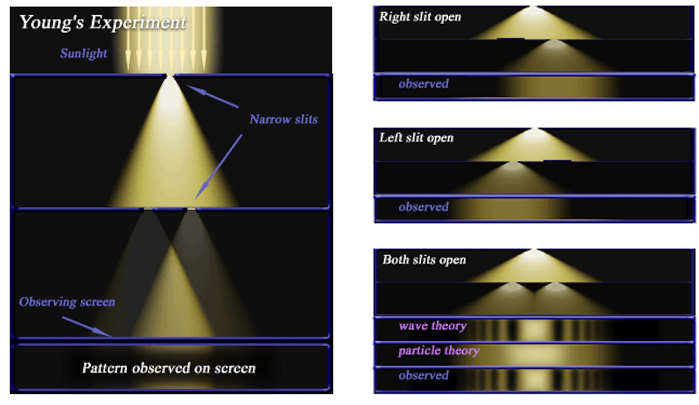

| Back to Index | About Me | Admissions | Home | Community | Services | ||||||||
The History: Historical basis of quantum theoryBasic considerationsThe development of quantum mechanics was influenced by the recognition that radiation and matter have characteristics of particles and waves. In the 18th century, physicists believed that light consisted of particles called corpuscles, while around 1800, evidence for a wave theory of light began to accumulate. Thomas Young demonstrated that if monochromatic light passes through slits, two emerging beams interfere, creating a fringe pattern of bright and dark bands on a screen. This theory explained the bands by stating that a bright band is produced when the crests and troughs of the waves from the two slits arrive together, while a dark band is produced when the crest of one wave arrives at the same time as the trough of the other. In 1815, experiments by Augustin-Jean Fresnel of France showed that when a parallel beam of light passes through a single slit, the emerging beam diverges, known as diffraction. The wave theory can be used to calculate the expected pattern in each case, agreeing precisely with experimental data. Early developmentsPlanck's Radiation LawsBy the late 19th century, physicists widely accepted the wave theory of light. However, classical physics did not account for the absorption and emission of light. All bodies radiate electromagnetic energy as heat, with the maximum energy radiated at different wavelengths depending on the body's temperature. Attempts to calculate the energy distribution for radiation from a blackbody using classical ideas were unsuccessful. One formula proposed by Wilhelm Wien disagreed with observations at long wavelengths, while another by Lord Rayleigh disagreed with those at short wavelengths. The wave theory of light remains a crucial understanding of light's propagation and absorption. In 1900, Max Planck proposed that radiation energy is emitted in discrete packets called quanta, with energy E related to frequency v by E = hv, now known as Planck's constant. This universal constant, approximately 6.62607 × 10^34 joule∙second, was found to agree with observation over the entire wavelength range. Einstien and photoelectric effectIn 1905, Einstein expanded Planck's hypothesis to explain the photoelectric effect, which involves the emission of electrons by a metal surface when it is irradiated by light or more-energetic photons. The kinetic energy of the emitted electrons depends on the frequency v of the radiation, not its intensity. For a given metal, there is a threshold frequency v0 below which no electrons are emitted. Emission occurs immediately upon light shines on the surface, with no detectable delay. Einstein proposed two assumptions: (1) light is composed of corpuscles or photons, with energy determined by Planck's relationship, and (2) an atom in the metal can absorb either a whole photon or nothing. The energy of the absorbed photon frees an electron, requiring a fixed energy W, known as the work function of the metal. If v is less than v0, no electrons are emitted. Bohr’s theory of the atomNiels Bohr of Denmark made a significant contribution to the field of quantum mechanics in 1913 by applying the quantum hypothesis to atomic spectra. The spectra of light emitted by gaseous atoms at low pressure consist of a set of discrete wavelengths, known as a line spectrum. These wavelengths are characteristic of the element and may form complex patterns. The simplest spectra are those of atomic hydrogen and alkali atoms. Bohr started with a model suggested by British physicist Ernest Rutherford, which was based on experiments conducted by Hans Geiger and Ernest Marsden. In Rutherford's model, the atom resembled a miniature solar system with the nucleus acting as the Sun and electrons as the circulating planets. Bohr made three assumptions: (1) an electron can be in only one of a discrete set of orbits, termed stationary states; (2) the only orbits allowed are those for which the angular momentum of the electron is a whole number n times ℏ (ℏ = h/2π); and (3) Newton's laws of motion, which applied to electrons orbiting the nucleus, also applied to electrons orbiting the nucleus. Bohr's theory showed that the energy of the orbit has the form E0, where E0 is a constant that may be expressed by a combination of known constants e, me, and ℏ. When an electron makes a transition from a state with energy En to one with lower energy Em, a quantum of energy is radiated with frequency v, given by the equation λv = c, where c is the speed of light. Bohr's theory has two important features that have survived in present-day quantum mechanics: (1) the existence of stationary, nonradiating states and (2) the relationship of radiation frequency to the energy difference between the initial and final states in a transition. Prior to Bohr, physicists had thought that the radiation frequency would be the same as the electron's frequency of rotation in an orbit. |
|||||
|  | |||||